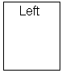
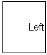
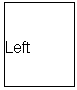

In this experiment you are required to say if the word is located up in the box, down in the box, on the left side of the box, or on the right side of the box. Do NOT say what the word says. For example:
 You should click "Up" because the word is located up in the box. You should click "Right" because the word is located in the right side of the box.
 You should click "Left" because the word is located in the left side of the box.
As soon as the boxes appear on your screen, identify the locations of the words as fast as you can. When you have finished, click on the "Finish" button. The time it took you to say the locations of the words will appear on the screen. If you want to try the same set of words, click on the "reload" button of your browser. If you want to continue with the experiment, click on "Continue Experiment."